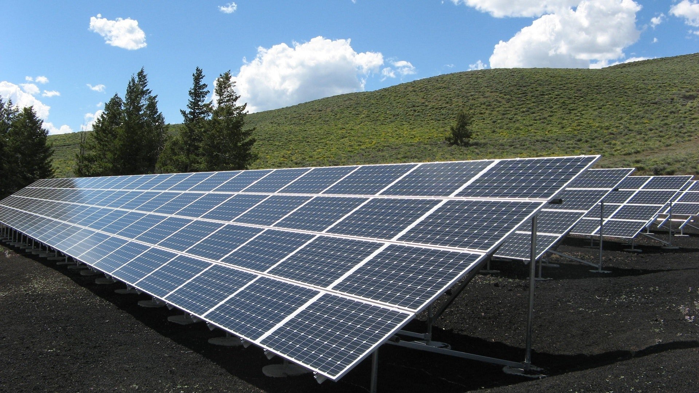
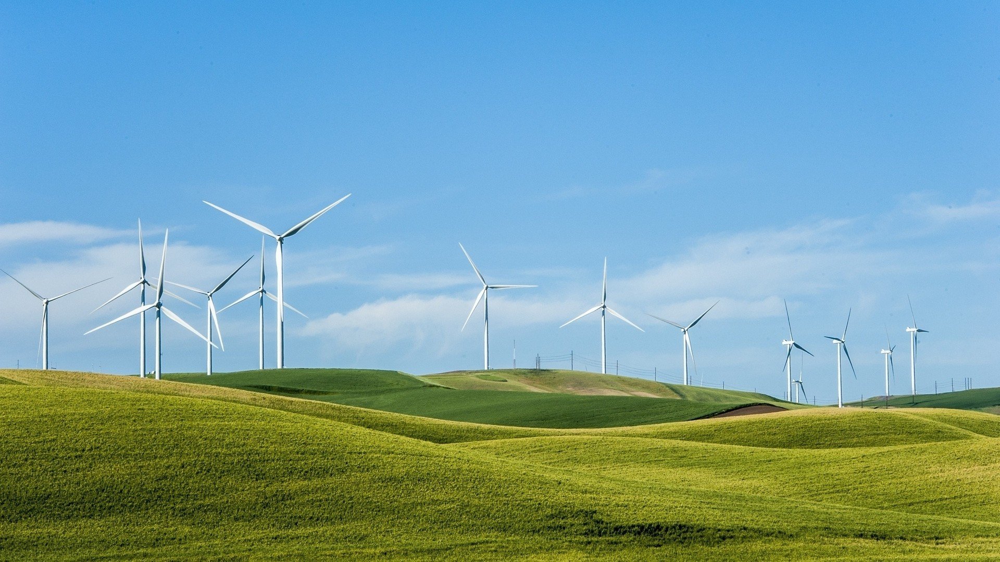
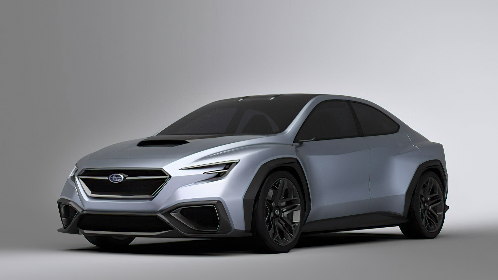

A napelem
A napelem olyan eszköz, amely az elektromágneses sugárzást villamos energiává tudja átalakítani. Az energiaátalakítás alapja, hogy a sugárzás elnyelődésekor mozgásképes töltött részecskéket generál, amiket az eszközben az elektrokémiai potenciálok, illetve az elektron kilépési munkák különbözőségéből adódó beépített elektromos tér rendezett mozgásra kényszerít, vagyis elektromos áram jön létre. Ez a jelenség bármilyen fényforrás esetén is lezajlik, nem szükséges kizárólagosan napfény.
A napelemekre általában 20-25 év a garancia, jellemzően 20-40 év az élettartamuk. A napenergia hasznosításában hosszabb távon számottevő növekedés várható.
A napelemek eltérnek a ma létező nagy teljesítményű naperőművektől. Ezek jellemzően más technológiát alkalmaznak. A naphőerőművek esetén a Nap sugárzó hőenergiáját folyadéknak adja át sugárzó hőátadással ami túlhevítéssel gőzturbina meghajtásos villamos generátorral szolgáltat áramot. A napelemmel való áramelőállítás előnye, hogy működése nem jár semmiféle melléktermék kibocsájtásával, így környezetkímélően működik és a napsugárzás kifogyhatatlansága miatt megújuló energiaforrás. Viszont hátránya a magas telepítési költség, valamint a napsugárzástól függő rendkívül váltakozó teljesítmény és az egyenetlenül előállított energia nehéz tárolhatósága.
A szélturbina
A szélturbina a szél energiáját egy lapátszerkezet segítségével forgó mozgássá alakító és azt hasznosító szerkezet. A szélenergia megújuló energia, melyet a szélmotor fog be. A szélturbina nem igényel jelentősebb karbantartást, rendkívül megbízható, és nincsenek káros hatásai a környezetre nézve, azonban elég drága a megépítése. Háromfázisú áram termelése történik, melyet kis veszteséggel szállíthatunk igen nagy távolságokra transzformátor segítségével. Az elődje a szélmalom volt, mely a mechanikai energiát használta fel gabona őrlésére. A szélenergiából származó áram mennyisége évszakonként változó, az átmeneti évszakok és a telek szelesebbek, mint a nyarak. A turbinák beindításához nyílt területen a szél átlagsebessége 3 m/s. Abban az esetben, ha gazdaságos energiatermelést szeretnénk, akkor legalább 6 m/s szükséges.
Szélfarmokat szárazföldön és vizeken is telepítenek. Az utóbbiak elterjedtebbek Európában, az Egyesült Államok még csak most ismerkedik ezzel a technológiával. A szélerőművek az egyik legdinamikusabban fejlődő technológiát és áramfejlesztési eljárást jelentik, a telepített kapacitás évi mintegy 20%-kal bővül. Néhány helyen a szélenergia már most is igencsak komoly szerepet játszik az áramellátásban.
Az elektromos autó
Az elektromos autó villanymotorral meghajtott autó. Az elektromos energiát leggyakrabban akkumulátorból nyeri, de egyes elektromos autók szuperkondenzátorban tárolják azt. Azokat az autókat, amelyek elektromotort és más típusú motort is használnak, hibridautónak nevezzük, és nem tekintjük teljesen elektromos járműveknek, mert azok csak töltéstároló üzemmódban üzemelnek.
Az elektromos autók töltése egy szemléletmódbeli váltást igényel. Az autósok az akkumulátort az esetek többségében nem akkor töltik, amikor az teljesen lemerült, hanem akkor, amikor az autó egyébként is áll. Így a töltésre a mindennapokban nem kell extra időt fordítani, minden reggel vagy minden munkanap végén teletöltött akkumulátorral lehet elindulni. Ilyen esetekben csak az elhasznált energiát kell pótolni, nem a teljesen lemerült akkumulátort kell nulláról feltölteni. Mivel ilyenkor 6-10 órát állhat az autó, nincs szükség nagy teljesítményű töltésre. Az autókhoz gyárilag biztosított (többnyire) 10 Amperes töltő 8 óra alatt 100-120 km-nyi, vagyis kb. 18 kWh energiát képes pótolni. Aki 50-60 km-t autózik naponta átlagosan, az a szükséges energiát 4-5 óra alatt egy ilyenről is tudja tölteni. Ennél nagyobb napi futásteljesítmény esetén érdemes 7 vagy autótól és hálózattól függően 11 kW-os fali töltőt telepíteni, mert azokkal egy éjszaka vagy munkaidő alatt jóval több energia is pótolható.
Hosszabb utak esetén, amikor az otthon betöltött energia nem elegendő a teljes táv megtételére, az akkumulátor villámtöltőn 20-40 perc alatt is feltölthető. Ezeket a töltéseket érdemes az egyébként is tervezett vagy szükséges pihenőkre időzíteni. Ezek hossza a töltés nélkül is eléri általában a 15-20 percet. Ezalatt az autó elegendő energiát nyer a következő 150-350 km-re. Ezek a töltők többnyire 50 kW-osak, de egyre gyakoribbak a 100-150 kW-is, illetve a 350 kW-os töltők is. Fontos tudni, hogy az 50 kW-nál nagyobb teljesítményt csak az újabb autók egy része tudja kihasználni.